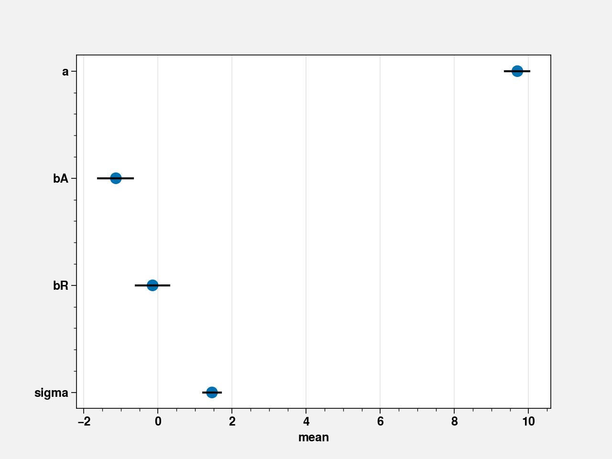
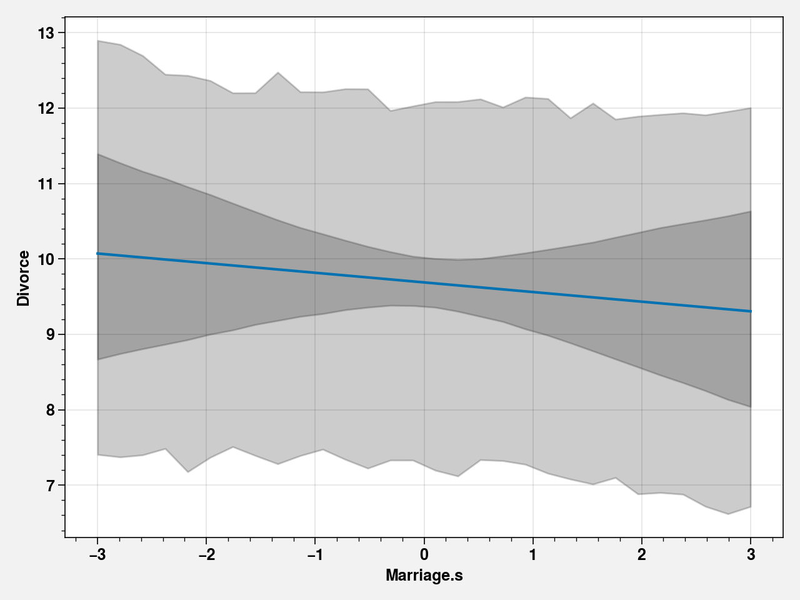

4. Chapter 05 - Multivariate Linear Models¶
!pip install torch torchvision pyro-ppl proplot black blackcellmagic
Requirement already satisfied: torch in /opt/hostedtoolcache/Python/3.7.8/x64/lib/python3.7/site-packages (1.5.0)
Requirement already satisfied: torchvision in /opt/hostedtoolcache/Python/3.7.8/x64/lib/python3.7/site-packages (0.7.0)
Requirement already satisfied: pyro-ppl in /opt/hostedtoolcache/Python/3.7.8/x64/lib/python3.7/site-packages (1.3.1)
Requirement already satisfied: proplot in /opt/hostedtoolcache/Python/3.7.8/x64/lib/python3.7/site-packages (0.6.1)
Requirement already satisfied: black in /opt/hostedtoolcache/Python/3.7.8/x64/lib/python3.7/site-packages (20.8b1)
Requirement already satisfied: blackcellmagic in /opt/hostedtoolcache/Python/3.7.8/x64/lib/python3.7/site-packages (0.0.2)
Requirement already satisfied: future in /opt/hostedtoolcache/Python/3.7.8/x64/lib/python3.7/site-packages (from torch) (0.18.2)
Requirement already satisfied: numpy in /opt/hostedtoolcache/Python/3.7.8/x64/lib/python3.7/site-packages (from torch) (1.17.0)
Requirement already satisfied: pillow>=4.1.1 in /opt/hostedtoolcache/Python/3.7.8/x64/lib/python3.7/site-packages (from torchvision) (7.2.0)
Requirement already satisfied: opt-einsum>=2.3.2 in /opt/hostedtoolcache/Python/3.7.8/x64/lib/python3.7/site-packages (from pyro-ppl) (3.3.0)
Requirement already satisfied: tqdm>=4.36 in /opt/hostedtoolcache/Python/3.7.8/x64/lib/python3.7/site-packages (from pyro-ppl) (4.48.2)
Requirement already satisfied: pyro-api>=0.1.1 in /opt/hostedtoolcache/Python/3.7.8/x64/lib/python3.7/site-packages (from pyro-ppl) (0.1.2)
Requirement already satisfied: matplotlib in /opt/hostedtoolcache/Python/3.7.8/x64/lib/python3.7/site-packages (from proplot) (3.2.1)
Requirement already satisfied: click>=7.1.2 in /opt/hostedtoolcache/Python/3.7.8/x64/lib/python3.7/site-packages (from black) (7.1.2)
Requirement already satisfied: toml>=0.10.1 in /opt/hostedtoolcache/Python/3.7.8/x64/lib/python3.7/site-packages (from black) (0.10.1)
Requirement already satisfied: pathspec<1,>=0.6 in /opt/hostedtoolcache/Python/3.7.8/x64/lib/python3.7/site-packages (from black) (0.8.0)
Requirement already satisfied: regex>=2020.1.8 in /opt/hostedtoolcache/Python/3.7.8/x64/lib/python3.7/site-packages (from black) (2020.7.14)
Requirement already satisfied: mypy-extensions>=0.4.3 in /opt/hostedtoolcache/Python/3.7.8/x64/lib/python3.7/site-packages (from black) (0.4.3)
Requirement already satisfied: typing-extensions>=3.7.4 in /opt/hostedtoolcache/Python/3.7.8/x64/lib/python3.7/site-packages (from black) (3.7.4.3)
Requirement already satisfied: typed-ast>=1.4.0 in /opt/hostedtoolcache/Python/3.7.8/x64/lib/python3.7/site-packages (from black) (1.4.1)
Requirement already satisfied: appdirs in /opt/hostedtoolcache/Python/3.7.8/x64/lib/python3.7/site-packages (from black) (1.4.4)
Requirement already satisfied: ipython in /opt/hostedtoolcache/Python/3.7.8/x64/lib/python3.7/site-packages (from blackcellmagic) (7.18.0)
Requirement already satisfied: kiwisolver>=1.0.1 in /opt/hostedtoolcache/Python/3.7.8/x64/lib/python3.7/site-packages (from matplotlib->proplot) (1.2.0)
Requirement already satisfied: python-dateutil>=2.1 in /opt/hostedtoolcache/Python/3.7.8/x64/lib/python3.7/site-packages (from matplotlib->proplot) (2.8.1)
Requirement already satisfied: pyparsing!=2.0.4,!=2.1.2,!=2.1.6,>=2.0.1 in /opt/hostedtoolcache/Python/3.7.8/x64/lib/python3.7/site-packages (from matplotlib->proplot) (2.4.7)
Requirement already satisfied: cycler>=0.10 in /opt/hostedtoolcache/Python/3.7.8/x64/lib/python3.7/site-packages (from matplotlib->proplot) (0.10.0)
Requirement already satisfied: setuptools>=18.5 in /opt/hostedtoolcache/Python/3.7.8/x64/lib/python3.7/site-packages (from ipython->blackcellmagic) (47.1.0)
Requirement already satisfied: pygments in /opt/hostedtoolcache/Python/3.7.8/x64/lib/python3.7/site-packages (from ipython->blackcellmagic) (2.6.1)
Requirement already satisfied: pickleshare in /opt/hostedtoolcache/Python/3.7.8/x64/lib/python3.7/site-packages (from ipython->blackcellmagic) (0.7.5)
Requirement already satisfied: traitlets>=4.2 in /opt/hostedtoolcache/Python/3.7.8/x64/lib/python3.7/site-packages (from ipython->blackcellmagic) (4.3.3)
Requirement already satisfied: backcall in /opt/hostedtoolcache/Python/3.7.8/x64/lib/python3.7/site-packages (from ipython->blackcellmagic) (0.2.0)
Requirement already satisfied: pexpect>4.3; sys_platform != "win32" in /opt/hostedtoolcache/Python/3.7.8/x64/lib/python3.7/site-packages (from ipython->blackcellmagic) (4.8.0)
Requirement already satisfied: decorator in /opt/hostedtoolcache/Python/3.7.8/x64/lib/python3.7/site-packages (from ipython->blackcellmagic) (4.4.2)
Requirement already satisfied: prompt-toolkit!=3.0.0,!=3.0.1,<3.1.0,>=2.0.0 in /opt/hostedtoolcache/Python/3.7.8/x64/lib/python3.7/site-packages (from ipython->blackcellmagic) (3.0.6)
Requirement already satisfied: jedi>=0.16 in /opt/hostedtoolcache/Python/3.7.8/x64/lib/python3.7/site-packages (from ipython->blackcellmagic) (0.17.2)
Requirement already satisfied: six>=1.5 in /opt/hostedtoolcache/Python/3.7.8/x64/lib/python3.7/site-packages (from python-dateutil>=2.1->matplotlib->proplot) (1.15.0)
Requirement already satisfied: ipython-genutils in /opt/hostedtoolcache/Python/3.7.8/x64/lib/python3.7/site-packages (from traitlets>=4.2->ipython->blackcellmagic) (0.2.0)
Requirement already satisfied: ptyprocess>=0.5 in /opt/hostedtoolcache/Python/3.7.8/x64/lib/python3.7/site-packages (from pexpect>4.3; sys_platform != "win32"->ipython->blackcellmagic) (0.6.0)
Requirement already satisfied: wcwidth in /opt/hostedtoolcache/Python/3.7.8/x64/lib/python3.7/site-packages (from prompt-toolkit!=3.0.0,!=3.0.1,<3.1.0,>=2.0.0->ipython->blackcellmagic) (0.2.5)
Requirement already satisfied: parso<0.8.0,>=0.7.0 in /opt/hostedtoolcache/Python/3.7.8/x64/lib/python3.7/site-packages (from jedi>=0.16->ipython->blackcellmagic) (0.7.1)
%load_ext blackcellmagic
import warnings
import pandas as pd
import proplot as plot
import pyro
import pyro.distributions as dist
import pyro.infer
import pyro.ops.stats as stats
import pyro.optim
import seaborn as sns
import torch
import torch.distributions.constraints as constraints
import torch.tensor as tensor
from pyro.contrib.autoguide import AutoLaplaceApproximation
warnings.filterwarnings("ignore")
%pylab inline
pyro.set_rng_seed(42)
plt.rcParams["axes.labelweight"] = "bold"
plt.rcParams["font.weight"] = "bold"
def summary(samples, prob=0.95):
site_stats = {}
for k, v in samples.items():
site_stats[k] = {
"mean": torch.mean(v, 0).data.numpy(),
"std": torch.std(v, 0).data.numpy(),
"{:.1f}%".format(100 * (1 - prob)): v.kthvalue(
int(len(v) * (1 - prob)), dim=0
)[0].data.numpy(),
"{:.1f}%".format(100 * prob): v.kthvalue(int(len(v) * prob), dim=0)[
0
].data.numpy(),
}
return pd.DataFrame(site_stats)
Populating the interactive namespace from numpy and matplotlib
waffle_divorce = pd.read_csv("https://raw.githubusercontent.com/rmcelreath/rethinking/master/data/WaffleDivorce.csv", sep=";")
d = waffle_divorce
# standardize predictor
d['MedianAgeMarriage_s'] = (d.MedianAgeMarriage - d.MedianAgeMarriage.mean())/d.MedianAgeMarriage.std()
def model51(MedianAgeMarriage_s):
a = pyro.sample("a", dist.Normal(tensor(10.), tensor(10.)))
bA = pyro.sample("bA", dist.Normal(tensor(0.), tensor(1.)))
sigma = pyro.sample("sigma", dist.Uniform(tensor(0.), tensor(50.)))
mu = a + bA * MedianAgeMarriage_s
divorce = pyro.sample("divorce", dist.Normal(mu, sigma))
return divorce
def link(laplace_guide, data, num_samples):
pred = pyro.infer.Predictive(laplace_guide, num_samples=num_samples)
samples = pred.get_samples()
mu = samples["bA"].detach().reshape((num_samples,1))*data.reshape(1, data.shape[0]) + samples["a"].detach().reshape((num_samples,1))
return mu
divorce = tensor(d.Divorce, dtype=torch.float)
MedianAgeMarriage_s = tensor(d['MedianAgeMarriage_s'], dtype=torch.float)
conditioned51 = pyro.condition(model51, data={"divorce": divorce})
guide51 = pyro.infer.autoguide.AutoLaplaceApproximation(conditioned51)
pyro.clear_param_store()
svi = pyro.infer.SVI(
model=conditioned51,
guide=guide51,
optim=pyro.optim.Adam({"lr": 0.1}),
loss=pyro.infer.Trace_ELBO(),
)
num_steps = 5000
losses = [svi.step(MedianAgeMarriage_s) for t in range(num_steps)]
plt.plot(losses)
plt.title("ELBO")
plt.xlabel("step")
plt.ylabel("loss")
plt.tight_layout()
laplace_guide51 = guide51.laplace_approximation(MedianAgeMarriage_s)
pred51 = pyro.infer.Predictive(laplace_guide51, num_samples=1000)

5. Code 5.2¶
mam_seq = torch.linspace(-3., 3.5, steps=30)
mu = link(laplace_guide51, mam_seq, 1000)
mu_PI = stats.pi(mu, dim=0, prob=0.89)
fig, ax = plt.subplots()
ax.scatter(waffle_divorce['MedianAgeMarriage_s'], waffle_divorce['Divorce'])
x = waffle_divorce['MedianAgeMarriage_s'].sort_values()
y = tensor(waffle_divorce['MedianAgeMarriage_s'].sort_values()) * pred51.get_samples()["bA"].detach().mean() + pred51.get_samples()["a"].detach().mean()
ax.scatter(waffle_divorce['MedianAgeMarriage_s'], waffle_divorce['Divorce'])
ax.plot(x,y)
ax.fill_between(mam_seq, mu_PI[0], mu_PI[1], color='gray')
ax.set_xlabel("MedianAgeMarriage.s")
ax.set_ylabel('Divorce')
fig.tight_layout()
6. Code 5.3¶
d['Marriage_s'] = (d.Marriage - d.Marriage.mean())/d.Marriage.std()
def model52(Marriage_s):
a = pyro.sample("a", dist.Normal(tensor(10.), tensor(10.)))
bR = pyro.sample("bR", dist.Normal(tensor(0.), tensor(1.)))
sigma = pyro.sample("sigma", dist.Uniform(tensor(0.), tensor(10.)))
mu = a + bR * Marriage_s
divorce = pyro.sample("divorce", dist.Normal(mu, sigma))
return divorce
def link(laplace_guide, data, num_samples):
pred = pyro.infer.Predictive(laplace_guide, num_samples=num_samples)
samples = pred.get_samples()
mu = samples["bR"].detach().reshape((num_samples,1))*data.reshape(1, data.shape[0]) + samples["a"].detach().reshape((num_samples,1))
return mu
divorce = tensor(d.Divorce, dtype=torch.float)
Marriage_s = tensor(d['Marriage_s'], dtype=torch.float)
conditioned52 = pyro.condition(model52, data={"divorce": divorce})
guide52 = pyro.infer.autoguide.AutoLaplaceApproximation(conditioned52)
pyro.clear_param_store()
svi = pyro.infer.SVI(
model=conditioned52,
guide=guide52,
optim=pyro.optim.Adam({"lr": 0.1}),
loss=pyro.infer.Trace_ELBO(),
)
num_steps = 5000
losses = [svi.step(Marriage_s) for t in range(num_steps)]
plt.plot(losses)
plt.title("ELBO")
plt.xlabel("step")
plt.ylabel("loss")
plt.tight_layout()
laplace_guide52 = guide52.laplace_approximation(Marriage_s)
pred52 = pyro.infer.Predictive(laplace_guide52, num_samples=1000)
mam_seq = torch.linspace(-3., 3.5, steps=30)
mu = link(laplace_guide52, mam_seq, 1000)
mu_PI = stats.pi(mu, dim=0, prob=0.89)
fig, ax = plt.subplots()
ax.scatter(waffle_divorce['Marriage_s'], waffle_divorce['Divorce'])
x = waffle_divorce['Marriage_s'].sort_values()
y = tensor(waffle_divorce['Marriage_s'].sort_values()) * pred52.get_samples()["bR"].detach().mean() + pred52.get_samples()["a"].detach().mean()
ax.scatter(waffle_divorce['Marriage_s'], waffle_divorce['Divorce'])
ax.plot(x,y)
ax.fill_between(mam_seq, mu_PI[0], mu_PI[1], color='gray')
ax.set_xlabel("Marriage.s")
ax.set_ylabel('Divorce')
fig.tight_layout()

7. Code 5.4¶
def model53(Marriage_s, MedianAgeMarriage_s):
a = pyro.sample("a", dist.Normal(tensor(10.), tensor(10.)))
bA = pyro.sample("bA", dist.Normal(tensor(0.), tensor(1.)))
bR = pyro.sample("bR", dist.Normal(tensor(0.), tensor(1.)))
sigma = pyro.sample("sigma", dist.Uniform(tensor(0.), tensor(10.)))
mu = a + bR * Marriage_s + bA * MedianAgeMarriage_s
divorce = pyro.sample("divorce", dist.Normal(mu, sigma))
return divorce
divorce = tensor(d.Divorce, dtype=torch.float)
Marriage_s = tensor(d['Marriage_s'], dtype=torch.float)
MedianAgeMarriage_s = tensor(d['MedianAgeMarriage_s'], dtype=torch.float)
conditioned53 = pyro.condition(model53, data={"divorce": divorce})
guide53 = pyro.infer.autoguide.AutoLaplaceApproximation(conditioned53)
pyro.clear_param_store()
svi = pyro.infer.SVI(
model=conditioned53,
guide=guide53,
optim=pyro.optim.Adam({"lr": 0.1}),
loss=pyro.infer.Trace_ELBO(),
)
num_steps = 5000
losses = [svi.step(Marriage_s, MedianAgeMarriage_s) for t in range(num_steps)]
laplace_guide53 = guide53.laplace_approximation(Marriage_s, MedianAgeMarriage_s)
pred53 = pyro.infer.Predictive(laplace_guide53, num_samples=1000)
samples53 = pred53.get_samples()
post53 = summary(samples53)
pred53
Predictive(
(model): AutoMultivariateNormal()
)
8. Code 5.5¶
precis = summary(pred53.get_samples())
precis = precis.drop(columns = ["_AutoMultivariateNormal_latent"]).T
fig, ax = plt.subplots()
sns.pointplot(precis["mean"], precis.index, join=False, ax=ax)
for i, param in enumerate(precis.index):
sns.lineplot(np.hstack(precis.loc[param, ["5.0%", "95.0%"]].values), [i, i], color="k", ax=ax)

9. Code 5.6¶
def model54(MedianAgeMarriage_s):
a = pyro.sample("a", dist.Normal(tensor(0.), tensor(10.)))
b = pyro.sample("bA", dist.Normal(tensor(0.), tensor(1.)))
sigma = pyro.sample("sigma", dist.Uniform(tensor(0.), tensor(10.)))
mu = a + b * MedianAgeMarriage_s
marriage_s = pyro.sample("marriage", dist.Normal(mu, sigma))
return marriage_s
conditioned54 = pyro.condition(model54, data={"marriage": Marriage_s})
guide54 = pyro.infer.autoguide.AutoLaplaceApproximation(conditioned54)
pyro.clear_param_store()
svi = pyro.infer.SVI(
model=conditioned54,
guide=guide54,
optim=pyro.optim.Adam({"lr": 0.1}),
loss=pyro.infer.Trace_ELBO(),
)
num_steps = 5000
losses = [svi.step(MedianAgeMarriage_s) for t in range(num_steps)]
laplace_guide54 = guide54.laplace_approximation(MedianAgeMarriage_s)
pred54 = pyro.infer.Predictive(laplace_guide54, num_samples=1000)
precis = summary(pred54.get_samples())
10. Code 5.7¶
mu = precis.loc["mean", "a"] + precis.loc["mean", "bA"]*waffle_divorce['MedianAgeMarriage_s']
m_resid = waffle_divorce['MedianAgeMarriage_s'] - mu
11. Code 5.8¶
fig, ax = plt.subplots()
ax.scatter(waffle_divorce['MedianAgeMarriage_s'], waffle_divorce['Marriage_s'])
x = waffle_divorce['MedianAgeMarriage_s'].sort_values().unique()
y = precis.loc["mean", "a"] + precis.loc["mean", "bA"]*x
ax.plot(x,y)
for i in range(len(m_resid)):
x = waffle_divorce['MedianAgeMarriage_s'][i]
y = waffle_divorce['Marriage_s'][i]
sns.lineplot([x, x], [mu[i], y], color="k", alpha=1)
ax.set_xlabel('MedianMarriage_s')
ax.set_ylabel('Marriage_s')
fig.tight_layout()

12. Code 5.9¶
def sim(post, A, R, num_samples=1000):
mu = post["bR"].detach().reshape((num_samples,1))*R.reshape(1, R.shape[0])
mu += post["a"].detach().reshape((num_samples,1))
mu += post["bA"].detach().reshape((num_samples,1))*A
sigma = post["sigma"].reshape(num_samples,1)
divorce = dist.Normal(mu,
sigma).sample()
return divorce
def link(samples, A, R, num_samples=1000):
mu = samples["bR"].detach().reshape((num_samples,1))*R.reshape(1, R.shape[0])
mu += samples["a"].detach().reshape((num_samples,1))
mu += samples["bA"].detach().reshape((num_samples,1))*A
return mu
A_avg = d['MedianAgeMarriage_s'].mean()
R_seq = torch.linspace(-3., 3., steps=30)
samples = samples53
mu = link(samples, A_avg, R_seq, num_samples=1000)
mu_mean = mu.mean(0)
mu_PI = stats.pi(mu, dim=0, prob=0.89)
R_sim = sim(samples, A_avg, R_seq)
R_PI = stats.pi(R_sim, dim=0, prob=0.89)
fig, ax = plt.subplots()
sns.lineplot(R_seq.numpy(), mu_mean.numpy(), ax=ax)
ax.fill_between(R_seq, mu_PI[0], mu_PI[1], color="k", alpha=0.2)
ax.fill_between(R_seq, R_PI[0], R_PI[1], color="k", alpha=0.2)
ax.set_xlabel('Marriage.s')
ax.set_ylabel('Divorce')
fig.tight_layout()

13. Code 5.10¶
def sim(post, A, R, num_samples=1000):
mu = post["bA"].detach().reshape((num_samples,1))*A.reshape(1, A.shape[0])
mu += post["bR"].detach().reshape((num_samples,1))*R
mu += post["a"].detach().reshape((num_samples,1))
sigma = post["sigma"].reshape(num_samples,1)
divorce = dist.Normal(mu,
sigma).sample()
return divorce
def link(samples, A, R, num_samples=1000):
mu = samples["bA"].detach().reshape((num_samples,1))*A.reshape(1, A.shape[0])
mu += samples["a"].detach().reshape((num_samples,1))
mu += samples["bR"].detach().reshape((num_samples,1))*R
return mu
R_avg = d['Marriage_s'].mean()
A_seq = torch.linspace(-3., 3.5, steps=30)
samples = samples53
mu = link(samples, A_seq, R_avg, num_samples=1000)
mu_mean = mu.mean(0)
mu_PI = stats.pi(mu, dim=0, prob=0.89)
A_sim = sim(samples, A_seq, R_avg)
A_PI = stats.pi(A_sim, dim=0, prob=0.89)
fig, ax = plt.subplots()
sns.lineplot(A_seq.numpy(), mu_mean.numpy(), ax=ax)
ax.fill_between(A_seq, mu_PI[0], mu_PI[1], color="k", alpha=0.2)
ax.fill_between(A_seq, A_PI[0], A_PI[1], color="k", alpha=0.2)
ax.set_xlabel('MedianAgeMarriage.s')
ax.set_ylabel('Divorce')
fig.tight_layout()
14. Code 5.11¶
def sim(post, A, R, num_samples=1000):
mu = post["bA"].detach().reshape((num_samples,1))*A.reshape(1, A.shape[0])
mu += post["bR"].detach().reshape((num_samples,1))*R.reshape(1, R.shape[0])
mu += post["a"].detach().reshape((num_samples,1))
sigma = post["sigma"].reshape(num_samples,1)
divorce = dist.Normal(mu,
sigma).sample()
return divorce
#mu = post53.loc["mean", "a"] + post53.loc["mean", "bA"]*waffle_divorce['MedianAgeMarriage_s'] + post53.loc["mean", "bR"]*waffle_divorce['Marriage_s']
#mu = tensor(mu, dtype=torch.float)
num_samples = 1000
A = tensor(waffle_divorce['MedianAgeMarriage_s'], dtype=torch.float)
R = tensor(waffle_divorce['Marriage_s'], dtype=torch.float)
mu = samples["bA"].detach().reshape((num_samples,1))*A.reshape(1, A.shape[0])
mu += samples["bR"].detach().reshape((num_samples,1))*R.reshape(1, R.shape[0])
mu += samples["a"].detach().reshape((num_samples,1))
mu_mean = mu.mean(0)
mu_PI = stats.pi(mu, dim=0, prob=0.89)
divorce_sim = sim(samples, waffle_divorce['MedianAgeMarriage_s'].values, waffle_divorce['Marriage_s'].values)
divorce_PI = stats.pi(divorce_sim, dim=0, prob=0.89)
15. Code 5.12¶
fig, ax = plt.subplots()
ax.scatter(d.Divorce, mu_mean)
ax.set_xlabel('Observed divorce')
ax.set_ylabel('Predicted divorce')
x = torch.linspace(6, 14, 101)
sns.lineplot(x, x, color="k", ax=ax)
ax.lines[-1].set_linestyle("--")
for i in range(d.shape[0]):
sns.lineplot(divorce[i].repeat(2), mu_PI[:, i], color="k", ax=ax)

16. Code 5.13¶
identify = mu_mean.sort(descending=True)[1][:2].numpy()
for i in identify:
ax.annotate(d["Loc"][i], (divorce[i].numpy(), mu_mean[i].numpy()), xytext=(-35, -5),
textcoords="offset pixels")
fig

17. Ccode 5.14¶
divorce_resid = tensor(d.Divorce) - mu_mean
divorce_resid = divorce_resid.numpy()
o = divorce_resid.argsort()
fig, ax = plt.subplots(figsize=(8, 10))
ax.scatter(divorce_resid[o], d.Loc[o])
ax.set(xlim=(-6, 5))
ax.axvline(x=0, c="k", alpha=0.2)
for i in range(d.shape[0]):
j = o[i]
sns.lineplot(divorce[j] - mu_PI[:, j], [i, i], color="k", ax=ax)
sns.scatterplot(divorce[j] - divorce_PI[:, j], [i, i], color="gray", marker="+", ax=ax)
fig.tight_layout()
18. Code 5.15¶
N = 100
x_real = dist.Normal(0,1).rsample(torch.Size([N]))
x_spur = dist.Normal(x_real,1).rsample(torch.Size([N]))
y = dist.Normal(x_real,1).rsample(torch.Size([N]))
d = pd.DataFrame([x_real.numpy(), x_spur.numpy(), y.numpy()]).T
d.columns = ["x_real", "x_spur", "y"]
19. Code 5.16¶
milk_df = pd.read_csv("https://raw.githubusercontent.com/rmcelreath/rethinking/master/data/milk.csv", sep=";")
d = milk_df
d
| clade | species | kcal.per.g | perc.fat | perc.protein | perc.lactose | mass | neocortex.perc | |
|---|---|---|---|---|---|---|---|---|
| 0 | Strepsirrhine | Eulemur fulvus | 0.49 | 16.60 | 15.42 | 67.98 | 1.95 | 55.16 |
| 1 | Strepsirrhine | E macaco | 0.51 | 19.27 | 16.91 | 63.82 | 2.09 | NaN |
| 2 | Strepsirrhine | E mongoz | 0.46 | 14.11 | 16.85 | 69.04 | 2.51 | NaN |
| 3 | Strepsirrhine | E rubriventer | 0.48 | 14.91 | 13.18 | 71.91 | 1.62 | NaN |
| 4 | Strepsirrhine | Lemur catta | 0.60 | 27.28 | 19.50 | 53.22 | 2.19 | NaN |
| 5 | New World Monkey | Alouatta seniculus | 0.47 | 21.22 | 23.58 | 55.20 | 5.25 | 64.54 |
| 6 | New World Monkey | A palliata | 0.56 | 29.66 | 23.46 | 46.88 | 5.37 | 64.54 |
| 7 | New World Monkey | Cebus apella | 0.89 | 53.41 | 15.80 | 30.79 | 2.51 | 67.64 |
| 8 | New World Monkey | Saimiri boliviensis | 0.91 | 46.08 | 23.34 | 30.58 | 0.71 | NaN |
| 9 | New World Monkey | S sciureus | 0.92 | 50.58 | 22.33 | 27.09 | 0.68 | 68.85 |
| 10 | New World Monkey | Cebuella pygmaea | 0.80 | 41.35 | 20.85 | 37.80 | 0.12 | 58.85 |
| 11 | New World Monkey | Callimico goeldii | 0.46 | 3.93 | 25.30 | 70.77 | 0.47 | 61.69 |
| 12 | New World Monkey | Callithrix jacchus | 0.71 | 38.38 | 20.09 | 41.53 | 0.32 | 60.32 |
| 13 | New World Monkey | Leontopithecus rosalia | 0.71 | 36.90 | 21.27 | 41.83 | 0.60 | NaN |
| 14 | Old World Monkey | Chlorocebus pygerythrus | 0.73 | 39.17 | 14.65 | 46.18 | 3.47 | NaN |
| 15 | Old World Monkey | Miopithecus talpoin | 0.68 | 40.15 | 18.08 | 41.77 | 1.55 | 69.97 |
| 16 | Old World Monkey | M fuscata | 0.72 | 53.05 | 13.00 | 33.95 | 7.08 | NaN |
| 17 | Old World Monkey | M mulatta | 0.97 | 55.51 | 13.17 | 31.32 | 3.24 | 70.41 |
| 18 | Old World Monkey | M sinica | 0.79 | 48.90 | 13.91 | 37.19 | 7.94 | NaN |
| 19 | Old World Monkey | Papio spp | 0.84 | 54.31 | 10.97 | 34.72 | 12.30 | 73.40 |
| 20 | Ape | Nomascus concolor | 0.48 | 15.96 | 12.52 | 71.52 | 7.59 | NaN |
| 21 | Ape | Hylobates lar | 0.62 | 34.51 | 12.57 | 52.92 | 5.37 | 67.53 |
| 22 | Ape | Symphalangus syndactylus | 0.51 | 26.42 | 13.46 | 60.12 | 10.72 | NaN |
| 23 | Ape | Pongo pygmaeus | 0.54 | 37.78 | 7.37 | 54.85 | 35.48 | 71.26 |
| 24 | Ape | Gorilla gorilla gorilla | 0.49 | 27.18 | 16.29 | 56.53 | 79.43 | 72.60 |
| 25 | Ape | G gorilla beringei | 0.53 | 30.59 | 20.77 | 48.64 | 97.72 | NaN |
| 26 | Ape | Pan paniscus | 0.48 | 21.18 | 11.68 | 67.14 | 40.74 | 70.24 |
| 27 | Ape | P troglodytes | 0.55 | 36.84 | 9.54 | 53.62 | 33.11 | 76.30 |
| 28 | Ape | Homo sapiens | 0.71 | 50.49 | 9.84 | 39.67 | 54.95 | 75.49 |
20. Code 5.17¶
def model55(neocortex_perc):
a = pyro.sample("a", dist.Normal(tensor(0.), tensor(100.)))
bn = pyro.sample("bn", dist.Normal(tensor(0.), tensor(1.)))
sigma = pyro.sample("sigma", dist.Uniform(tensor(0.), tensor(10.)))
mu = a + bn * neocortex_perc
kcal_per_g = pyro.sample("kcal_per_g", dist.Normal(mu.float(), sigma.float()))
return kcal_per_g
dcc = d.dropna()
kcal_per_g = tensor(dcc['kcal.per.g'], dtype=torch.float)
neocortex_perc = tensor(dcc['neocortex.perc'], dtype=torch.float)
conditioned55 = pyro.condition(model55, data={"kcal_per_g": kcal_per_g})
guide55 = pyro.infer.autoguide.AutoLaplaceApproximation(conditioned55)
pyro.clear_param_store()
svi = pyro.infer.SVI(
model=conditioned55,
guide=guide55,
optim=pyro.optim.Adam({"lr": 0.01}),
loss=pyro.infer.Trace_ELBO(),
)
num_steps = 5000
losses = [svi.step(neocortex_perc.float()) for t in range(num_steps)]
plt.plot(losses)
[<matplotlib.lines.Line2D at 0x7febdcc48fd0>]

21. Code 5.18¶
d['neocortex.perc']
0 55.16
1 NaN
2 NaN
3 NaN
4 NaN
5 64.54
6 64.54
7 67.64
8 NaN
9 68.85
10 58.85
11 61.69
12 60.32
13 NaN
14 NaN
15 69.97
16 NaN
17 70.41
18 NaN
19 73.40
20 NaN
21 67.53
22 NaN
23 71.26
24 72.60
25 NaN
26 70.24
27 76.30
28 75.49
Name: neocortex.perc, dtype: float64
22. Code 5.19¶
dcc = d.dropna()
23. Code 5.20¶
def model55(data):
a = pyro.sample("a", dist.Normal(tensor(0.), tensor(100.)))
bn = pyro.sample("bn", dist.Normal(tensor(0.), tensor(1.)))
sigma = pyro.sample("sigma", dist.Uniform(tensor(0.), tensor(1.)))
mu = a + bn * data
kcal_per_g = pyro.sample("kcal_per_g", dist.Normal(mu, sigma))
return kcal_per_g
kcal_per_g = tensor(dcc['kcal.per.g'], dtype=torch.float)
neocortex_perc = tensor(dcc['neocortex.perc'], dtype=torch.float)
conditioned55 = pyro.condition(model55, data={"kcal_per_g": kcal_per_g})
guide55 = pyro.infer.autoguide.AutoLaplaceApproximation(conditioned55)
pyro.clear_param_store()
svi = pyro.infer.SVI(
model=conditioned55,
guide=guide55,
optim=pyro.optim.Adam({"lr": 0.005}),
loss=pyro.infer.Trace_ELBO(),
)
num_steps = 5000
losses = [svi.step(neocortex_perc.float()) for t in range(num_steps)]
plt.plot(losses)
laplace_guide55 = guide55.laplace_approximation(neocortex_perc)
pred55 = pyro.infer.Predictive(laplace_guide55, num_samples=1000)
precis55 = summary(pred55.get_samples())

def model(x, y):
a = pyro.sample("a", dist.Normal(tensor(0.), tensor(100.)))
bn = pyro.sample("bn", dist.Normal(tensor(0.), tensor(1.)))
mu = a + bn * x
sigma = pyro.sample("sigma", dist.Uniform(tensor(0.), tensor(1.)))
with pyro.plate("plate"):
pyro.sample("kcal_per_g", dist.Normal(mu, sigma), obs=y)
def model55(x,y):
a = pyro.sample("a", dist.Normal(tensor(0.), tensor(100.)))
bn = pyro.sample("bn", dist.Normal(tensor(0.), tensor(1.)))
sigma = pyro.sample("sigma", dist.Uniform(tensor(0.), tensor(1.)))
mu = a + bn * x
kcal_per_g = pyro.sample("kcal_per_g", dist.Normal(mu, sigma))#, obs=y)
return kcal_per_g
kcal_per_g = tensor(dcc['kcal.per.g'], dtype=torch.float).float()
neocortex_perc = tensor(dcc['neocortex.perc'], dtype=torch.float).float()
pyro.clear_param_store()
conditioned55 = pyro.condition(model55, data={"kcal_per_g": kcal_per_g})
guide55 = pyro.infer.autoguide.AutoLaplaceApproximation(conditioned55)
pyro.clear_param_store()
svi = pyro.infer.SVI(
model=conditioned55,
guide=guide55,
optim=pyro.optim.Adam({"lr": 0.005}),
loss=pyro.infer.Trace_ELBO(),
)
num_steps = 5000
losses = [svi.step(neocortex_perc, kcal_per_g) for t in range(num_steps)]
plt.plot(losses)
laplace_guide55 = guide55.laplace_approximation(neocortex_perc, kcal_per_g)
pred55 = pyro.infer.Predictive(laplace_guide55, num_samples=1000)
precis55 = summary(pred55.get_samples())
precis55
| _AutoMultivariateNormal_latent | a | bn | sigma | |
|---|---|---|---|---|
| mean | [38.724445, -0.5592735, 1.1130564] | 38.724472 | -0.5592732 | 0.7499051 |
| std | [5.122513, 0.07533453, 0.24596252] | 5.122513 | 0.07533453 | 0.045710217 |
| 5.0% | [30.631195, -0.6852666, 0.7258537] | 30.631195 | -0.6852666 | 0.67389476 |
| 95.0% | [47.238846, -0.43942103, 1.5153502] | 47.238846 | -0.43942103 | 0.81985277 |
neocortex_perc
tensor([55.1600, 64.5400, 64.5400, 67.6400, 68.8500, 58.8500, 61.6900, 60.3200,
69.9700, 70.4100, 73.4000, 67.5300, 71.2600, 72.6000, 70.2400, 76.3000,
75.4900])
"""def model(x, y):
a = pyro.sample("a", dist.Normal(tensor(0.), tensor(100.)))
bn = pyro.sample("bn", dist.Normal(tensor(0.), tensor(1.)))
mu = a + bn * x
sigma = pyro.sample("sigma", dist.Uniform(tensor(0.), tensor(1.)))
with pyro.plate("plate"):
pyro.sample("kcal_per_g", dist.Normal(mu, sigma), obs=y)
conditioned = pyro.condition(model, data={"kcal_per_g": kcal_per_g})
guide = pyro.infer.autoguide.AutoLaplaceApproximation(conditioned)
pyro.clear_param_store()
svi = pyro.infer.SVI(
model=conditioned,
guide=guide,
optim=pyro.optim.Adam({"lr": 0.005}),
loss=pyro.infer.Trace_ELBO(),
)
num_steps = 5000
losses = [svi.step(neocortex_perc, kcal_per_g) for t in range(num_steps)]
plt.plot(losses)
laplace_guide = guide.laplace_approximation(neocortex_perc, kcal_per_g)
pred = pyro.infer.Predictive(laplace_guide, num_samples=1000)"""
'def model(x, y):\n a = pyro.sample("a", dist.Normal(tensor(0.), tensor(100.)))\n bn = pyro.sample("bn", dist.Normal(tensor(0.), tensor(1.)))\n mu = a + bn * x\n sigma = pyro.sample("sigma", dist.Uniform(tensor(0.), tensor(1.)))\n with pyro.plate("plate"):\n pyro.sample("kcal_per_g", dist.Normal(mu, sigma), obs=y)\n\n\nconditioned = pyro.condition(model, data={"kcal_per_g": kcal_per_g})\nguide = pyro.infer.autoguide.AutoLaplaceApproximation(conditioned)\npyro.clear_param_store()\n\nsvi = pyro.infer.SVI(\n model=conditioned,\n guide=guide,\n optim=pyro.optim.Adam({"lr": 0.005}),\n loss=pyro.infer.Trace_ELBO(),\n)\nnum_steps = 5000\nlosses = [svi.step(neocortex_perc, kcal_per_g) for t in range(num_steps)]\nplt.plot(losses)\n\nlaplace_guide = guide.laplace_approximation(neocortex_perc, kcal_per_g)\npred = pyro.infer.Predictive(laplace_guide, num_samples=1000)'
24. Code 5.21¶
"""pred_summary55 = summary(pred.get_samples())
pred_summary55"""
'pred_summary55 = summary(pred.get_samples())\npred_summary55'
25. Code 5.22¶
"""pred_summary55.loc["mean", "bn"] * (76-55)"""
'pred_summary55.loc["mean", "bn"] * (76-55)'
26. Code 5.23¶
27. Code 5.24¶
dcc['log_mass'] = np.log(dcc['mass'])
28. Code 5.25¶
"""
def model56(logmass, kcal):
a = pyro.sample("a", dist.Normal(0, 100))
bm = pyro.sample("bn", dist.Normal(0, 1))
sigma = pyro.sample("sigma", dist.Uniform(0, 1))
mu = a + bm * logmass
with pyro.plate("data"):
pyro.sample("kcal_per_g", dist.Normal(mu, sigma))
kcal_per_g = tensor(dcc['kcal.per.g'], dtype=torch.float)
neocortex_perc = tensor(dcc['neocortex.perc'], dtype=torch.float)
conditioned56 = pyro.condition(model56, data={"kcal_per_g": kcal_per_g})
guide56 = pyro.infer.autoguide.AutoLaplaceApproximation(conditioned56)
pyro.clear_param_store()
svi = pyro.infer.SVI(
model=conditioned56,
guide=guide56,
optim=pyro.optim.Adam({"lr": 0.005}),
loss=pyro.infer.Trace_ELBO(),
)
num_steps = 5000
losses = [svi.step(neocortex_perc, kcal_per_g) for t in range(num_steps)]
plt.plot(losses)
laplace_guide56 = guide56.laplace_approximation(neocortex_perc, kcal_per_g)
pred56 = pyro.infer.Predictive(laplace_guide56, num_samples=1000)
precis56 = summary(pred56.get_samples())
precis56
"""
'\ndef model56(logmass, kcal):\n a = pyro.sample("a", dist.Normal(0, 100))\n bm = pyro.sample("bn", dist.Normal(0, 1))\n sigma = pyro.sample("sigma", dist.Uniform(0, 1))\n\n mu = a + bm * logmass\n with pyro.plate("data"):\n pyro.sample("kcal_per_g", dist.Normal(mu, sigma))\n\nkcal_per_g = tensor(dcc[\'kcal.per.g\'], dtype=torch.float)\nneocortex_perc = tensor(dcc[\'neocortex.perc\'], dtype=torch.float)\n\nconditioned56 = pyro.condition(model56, data={"kcal_per_g": kcal_per_g})\nguide56 = pyro.infer.autoguide.AutoLaplaceApproximation(conditioned56)\npyro.clear_param_store()\n\nsvi = pyro.infer.SVI(\n model=conditioned56,\n guide=guide56,\n optim=pyro.optim.Adam({"lr": 0.005}),\n loss=pyro.infer.Trace_ELBO(),\n)\nnum_steps = 5000\nlosses = [svi.step(neocortex_perc, kcal_per_g) for t in range(num_steps)]\nplt.plot(losses)\n\nlaplace_guide56 = guide56.laplace_approximation(neocortex_perc, kcal_per_g)\npred56 = pyro.infer.Predictive(laplace_guide56, num_samples=1000) \nprecis56 = summary(pred56.get_samples()) \n\nprecis56\n'
def model56(logmass, kcal):
a = pyro.sample("a", dist.Normal(tensor(0.), tensor(100.)))
bm = pyro.sample("bm", dist.Normal(tensor(0.), tensor(1.)))
sigma = pyro.sample("sigma", dist.Uniform(tensor(0.), tensor(1.)))
mu = a + bm * logmass
#print(mu)
kcal_per_g = pyro.sample("kcal_per_g", dist.Normal(mu.float(), sigma.float()))
return kcal_per_g
def guide56(logmass, kcal):
a_param = pyro.param("a_param", tensor(10.))
bm_param = pyro.param("bm_param", tensor(.5))
sigma_param = pyro.param("sigma_param", tensor(.5))
return pyro.sample("a", dist.Delta(a_param)), pyro.sample("bm", dist.Delta(bm_param)), pyro.sample("sigma", dist.Delta(sigma_param))
conditioned56 = pyro.condition(model56, data={"kcal_per_g": kcal_per_g})
pyro.clear_param_store()
svi = pyro.infer.SVI(
model=conditioned56,
guide=guide56,
optim=pyro.optim.Adam({"lr": 0.001}),
loss=pyro.infer.Trace_ELBO(),
)
num_steps = 5000
losses = [svi.step(neocortex_perc, kcal_per_g) for t in range(num_steps)]
plt.plot(losses)
[<matplotlib.lines.Line2D at 0x7febdf3aa190>]
pyro.param("bm_param")
tensor(-0.1276, requires_grad=True)
"""
kcal_per_g = tensor(dcc['kcal.per.g'], dtype=torch.float)
neocortex_perc = tensor(dcc['neocortex.perc'], dtype=torch.float)
guide56 = pyro.infer.autoguide.AutoLaplaceApproximation(conditioned56)
pyro.clear_param_store()
svi = pyro.infer.SVI(
model=conditioned56,
guide=guide56,
optim=pyro.optim.Adam({"lr": 0.005}),
loss=pyro.infer.Trace_ELBO(),
)
num_steps = 5000
losses = [svi.step(neocortex_perc, kcal_per_g) for t in range(num_steps)]
plt.plot(losses)
laplace_guide56 = guide56.laplace_approximation(neocortex_perc, kcal_per_g)
pred56 = pyro.infer.Predictive(laplace_guide56, num_samples=1000)
precis56 = summary(pred56.get_samples())
precis56
"""
'\n\nkcal_per_g = tensor(dcc[\'kcal.per.g\'], dtype=torch.float)\nneocortex_perc = tensor(dcc[\'neocortex.perc\'], dtype=torch.float)\n\n\nguide56 = pyro.infer.autoguide.AutoLaplaceApproximation(conditioned56)\npyro.clear_param_store()\n\nsvi = pyro.infer.SVI(\n model=conditioned56,\n guide=guide56,\n optim=pyro.optim.Adam({"lr": 0.005}),\n loss=pyro.infer.Trace_ELBO(),\n)\nnum_steps = 5000\nlosses = [svi.step(neocortex_perc, kcal_per_g) for t in range(num_steps)]\nplt.plot(losses)\n\nlaplace_guide56 = guide56.laplace_approximation(neocortex_perc, kcal_per_g)\npred56 = pyro.infer.Predictive(laplace_guide56, num_samples=1000) \nprecis56 = summary(pred56.get_samples()) \n\nprecis56\n'
29. Code 5.26¶
30. Code 5.27¶
31. Code 5.28¶
32. Code 5.29¶
N = 100
height = dist.Normal(10., 2.).rsample(torch.Size([N]))
leg_prop = dist.Uniform(0.4, 0.5).rsample(torch.Size([N]))
leg_left = leg_prop*height + dist.Normal(0., 0.02).rsample(torch.Size([N]))
leg_right = leg_prop*height + dist.Normal(0., 0.02).rsample(torch.Size([N]))
d = pd.DataFrame([height, leg_left, leg_right]).T
d.columns = ['height', 'leg_left', 'leg_right']
d['leg_left']
0 tensor(5.7180)
1 tensor(4.9624)
2 tensor(4.3404)
3 tensor(5.4653)
4 tensor(4.8009)
...
95 tensor(4.0597)
96 tensor(3.1883)
97 tensor(4.0643)
98 tensor(5.9066)
99 tensor(4.1089)
Name: leg_left, Length: 100, dtype: object
33. Code 5.30¶
def model58(ll, lr):
a = pyro.sample("a", dist.Normal(tensor(10.), tensor(100.)))
bl = pyro.sample("bl", dist.Normal(tensor(2.), tensor(10.)))
br = pyro.sample("br", dist.Normal(tensor(2.), tensor(10.)))
sigma = pyro.sample("sigma", dist.Uniform(tensor(0.), tensor(10.)))
mu = a + bl*ll + br*lr
with pyro.plate("height"):
pyro.sample("height", dist.Normal(mu, sigma))
#return height
conditioned58 = pyro.condition(model58, data={"height": tensor(height, dtype=torch.float)})
guide58 = pyro.infer.autoguide.AutoLaplaceApproximation(conditioned58)
pyro.clear_param_store()
svi = pyro.infer.SVI(model=conditioned58,
guide=guide58,
optim=pyro.optim.Adam({"lr": 0.01}),
loss=pyro.infer.Trace_ELBO())
num_steps = 5000
losses = [svi.step(tensor(leg_left, dtype=torch.float), tensor(leg_right, dtype=torch.float)) for t in range(num_steps)]
plt.plot(losses)
laplace_guide58 = guide58.laplace_approximation(tensor(leg_left, dtype=torch.float), tensor(leg_right, dtype=torch.float))
pred58 = pyro.infer.Predictive(laplace_guide58, num_samples=1000)
precis58 = summary(pred58.get_samples())

precis58
| _AutoMultivariateNormal_latent | a | bl | br | sigma | |
|---|---|---|---|---|---|
| mean | [1.0337458, 3.141063, -1.1763383, -2.7893252] | 1.033746 | 3.1410625 | -1.1763381 | 0.58046764 |
| std | [0.2597808, 1.6465611, 1.6511321, 0.07707023] | 0.2597808 | 1.6465611 | 1.6511321 | 0.042131346 |
| 5.0% | [0.61492366, 0.4741156, -3.8326325, -2.9146008] | 0.61492366 | 0.4741156 | -3.8326325 | 0.5143649 |
| 95.0% | [1.4572909, 5.7731295, 1.4903914, -2.6606252] | 1.4572909 | 5.7731295 | 1.4903914 | 0.65337145 |
34. Code 5.34¶
"""
def model59(ll):
a = pyro.sample("a", dist.Normal(tensor(10.), tensor(100.)))
bl = pyro.sample("bl", dist.Normal(tensor(2.), tensor(10.)))
sigma = pyro.sample("sigma", dist.Uniform(tensor(0.), tensor(10.)))
mu = a + bl*ll
height = pyro.sample("height", dist.Normal(mu, sigma))
return height
conditioned59 = pyro.condition(model59, data={"height": tensor(height, dtype=torch.float)})
guide59 = pyro.infer.autoguide.AutoLaplaceApproximation(conditioned59)
pyro.clear_param_store()
svi = pyro.infer.SVI(model=conditioned59,
guide=guide59,
optim=pyro.optim.Adam({"lr": 0.01}),
loss=pyro.infer.Trace_ELBO())
num_steps = 5000
losses = [svi.step(tensor(leg_left, dtype=torch.float)) for t in range(num_steps)]
plt.plot(losses)
laplace_guide59 = guide59.laplace_approximation(tensor(leg_left, dtype=torch.float))
pred59 = pyro.infer.Predictive(laplace_guide59, num_samples=1000)
precis59 = summary(pred59.get_samples())
precis59
"""
'\ndef model59(ll):\n a = pyro.sample("a", dist.Normal(tensor(10.), tensor(100.)))\n bl = pyro.sample("bl", dist.Normal(tensor(2.), tensor(10.)))\n sigma = pyro.sample("sigma", dist.Uniform(tensor(0.), tensor(10.)))\n\n mu = a + bl*ll\n height = pyro.sample("height", dist.Normal(mu, sigma))\n return height\n\n\nconditioned59 = pyro.condition(model59, data={"height": tensor(height, dtype=torch.float)})\nguide59 = pyro.infer.autoguide.AutoLaplaceApproximation(conditioned59)\npyro.clear_param_store()\n\nsvi = pyro.infer.SVI(model=conditioned59,\n guide=guide59,\n optim=pyro.optim.Adam({"lr": 0.01}),\n loss=pyro.infer.Trace_ELBO())\nnum_steps = 5000\nlosses = [svi.step(tensor(leg_left, dtype=torch.float)) for t in range(num_steps)]\nplt.plot(losses)\n\nlaplace_guide59 = guide59.laplace_approximation(tensor(leg_left, dtype=torch.float))\npred59 = pyro.infer.Predictive(laplace_guide59, num_samples=1000) \nprecis59 = summary(pred59.get_samples())\nprecis59\n'
35. Code 5.35¶
milk_df = pd.read_csv("https://raw.githubusercontent.com/rmcelreath/rethinking/master/data/milk.csv", sep=";")
d = milk_df
dmilk_df = pd.read_csv("https://raw.githubusercontent.com/rmcelreath/rethinking/master/data/milk.csv", sep=";")
d = milk_df
d
| clade | species | kcal.per.g | perc.fat | perc.protein | perc.lactose | mass | neocortex.perc | |
|---|---|---|---|---|---|---|---|---|
| 0 | Strepsirrhine | Eulemur fulvus | 0.49 | 16.60 | 15.42 | 67.98 | 1.95 | 55.16 |
| 1 | Strepsirrhine | E macaco | 0.51 | 19.27 | 16.91 | 63.82 | 2.09 | NaN |
| 2 | Strepsirrhine | E mongoz | 0.46 | 14.11 | 16.85 | 69.04 | 2.51 | NaN |
| 3 | Strepsirrhine | E rubriventer | 0.48 | 14.91 | 13.18 | 71.91 | 1.62 | NaN |
| 4 | Strepsirrhine | Lemur catta | 0.60 | 27.28 | 19.50 | 53.22 | 2.19 | NaN |
| 5 | New World Monkey | Alouatta seniculus | 0.47 | 21.22 | 23.58 | 55.20 | 5.25 | 64.54 |
| 6 | New World Monkey | A palliata | 0.56 | 29.66 | 23.46 | 46.88 | 5.37 | 64.54 |
| 7 | New World Monkey | Cebus apella | 0.89 | 53.41 | 15.80 | 30.79 | 2.51 | 67.64 |
| 8 | New World Monkey | Saimiri boliviensis | 0.91 | 46.08 | 23.34 | 30.58 | 0.71 | NaN |
| 9 | New World Monkey | S sciureus | 0.92 | 50.58 | 22.33 | 27.09 | 0.68 | 68.85 |
| 10 | New World Monkey | Cebuella pygmaea | 0.80 | 41.35 | 20.85 | 37.80 | 0.12 | 58.85 |
| 11 | New World Monkey | Callimico goeldii | 0.46 | 3.93 | 25.30 | 70.77 | 0.47 | 61.69 |
| 12 | New World Monkey | Callithrix jacchus | 0.71 | 38.38 | 20.09 | 41.53 | 0.32 | 60.32 |
| 13 | New World Monkey | Leontopithecus rosalia | 0.71 | 36.90 | 21.27 | 41.83 | 0.60 | NaN |
| 14 | Old World Monkey | Chlorocebus pygerythrus | 0.73 | 39.17 | 14.65 | 46.18 | 3.47 | NaN |
| 15 | Old World Monkey | Miopithecus talpoin | 0.68 | 40.15 | 18.08 | 41.77 | 1.55 | 69.97 |
| 16 | Old World Monkey | M fuscata | 0.72 | 53.05 | 13.00 | 33.95 | 7.08 | NaN |
| 17 | Old World Monkey | M mulatta | 0.97 | 55.51 | 13.17 | 31.32 | 3.24 | 70.41 |
| 18 | Old World Monkey | M sinica | 0.79 | 48.90 | 13.91 | 37.19 | 7.94 | NaN |
| 19 | Old World Monkey | Papio spp | 0.84 | 54.31 | 10.97 | 34.72 | 12.30 | 73.40 |
| 20 | Ape | Nomascus concolor | 0.48 | 15.96 | 12.52 | 71.52 | 7.59 | NaN |
| 21 | Ape | Hylobates lar | 0.62 | 34.51 | 12.57 | 52.92 | 5.37 | 67.53 |
| 22 | Ape | Symphalangus syndactylus | 0.51 | 26.42 | 13.46 | 60.12 | 10.72 | NaN |
| 23 | Ape | Pongo pygmaeus | 0.54 | 37.78 | 7.37 | 54.85 | 35.48 | 71.26 |
| 24 | Ape | Gorilla gorilla gorilla | 0.49 | 27.18 | 16.29 | 56.53 | 79.43 | 72.60 |
| 25 | Ape | G gorilla beringei | 0.53 | 30.59 | 20.77 | 48.64 | 97.72 | NaN |
| 26 | Ape | Pan paniscus | 0.48 | 21.18 | 11.68 | 67.14 | 40.74 | 70.24 |
| 27 | Ape | P troglodytes | 0.55 | 36.84 | 9.54 | 53.62 | 33.11 | 76.30 |
| 28 | Ape | Homo sapiens | 0.71 | 50.49 | 9.84 | 39.67 | 54.95 | 75.49 |
36. Code 5.36¶
def model510(pf):
a = pyro.sample("a", dist.Normal(tensor(0.6), tensor(10.)))
bf = pyro.sample("bf", dist.Normal(tensor(2.), tensor(1.)))
sigma = pyro.sample("sigma", dist.Uniform(tensor(0.), tensor(10.)))
mu = a + bf*pf
kcal_per_g = pyro.sample("kcal_per_g", dist.Normal(mu, sigma))
return height
conditioned510 = pyro.condition(model510, data={"kcal_per_g": tensor(d['kcal.per.g'], dtype=torch.float)})
guide510 = pyro.infer.autoguide.AutoLaplaceApproximation(conditioned510)
pyro.clear_param_store()
svi = pyro.infer.SVI(model=conditioned510,
guide=guide510,
optim=pyro.optim.Adam({"lr": 0.01}),
loss=pyro.infer.Trace_ELBO())
num_steps = 5000
losses = [svi.step(tensor(d['perc.fat'], dtype=torch.float)) for t in range(num_steps)]
plt.plot(losses)
laplace_guide510 = guide510.laplace_approximation(tensor(d['perc.fat'], dtype=torch.float))
pred510 = pyro.infer.Predictive(laplace_guide510, num_samples=1000)
precis510 = summary(pred510.get_samples())
precis510
| _AutoMultivariateNormal_latent | a | bf | sigma | |
|---|---|---|---|---|
| mean | [0.29958495, 0.010071315, -4.887782] | 0.299585 | 0.010071317 | 0.0754993 |
| std | [0.036452603, 0.0010025315, 0.13684633] | 0.036452603 | 0.0010025315 | 0.010177084 |
| 5.0% | [0.23804569, 0.008353781, -5.1080747] | 0.23804569 | 0.008353781 | 0.06011361 |
| 95.0% | [0.35966238, 0.011607637, -4.6594567] | 0.35966238 | 0.011607637 | 0.09382737 |